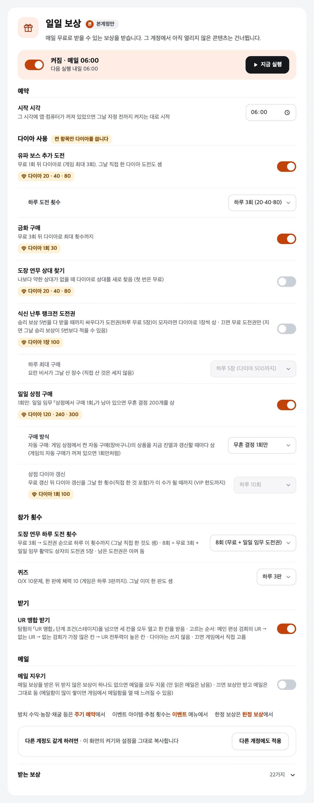

일일 보상
매일 고른 시각 (기본 06:00)
매일 무료로 받을 수 있는 보상과 일일 콘텐츠를 한 번에 처리합니다. 그 계정에서 아직 열리지 않은 콘텐츠는 건너뜁니다.
- 매일 보상: 출석, 친구 금화, VIP·일일 특전 무료 패키지, 패스 일일 보상, 유파 출석·보스, 무료 소환, 무료 패키지, 임무 보상·활약도 상자, 메일(보상을 받은 뒤 받지 않은 보상이 하나도 없으면 메일을 모두 지움). 서포트(St.8001)가 열린 계정은 게임 서포트의 [일괄 실행]으로 합니다. 단 농장의 「가장 높은 품질의 검희를 파견해 육성」은 별을 보지 않고 위탁 횟수를 쓰므로 하지 않습니다 (위탁은 보석채취가 별 기준으로).
- 일일 콘텐츠: 강적 시련(하루 5회), 식신 난투 랭크전(승리 보상 5번을 다 받을 때까지, 도전권이 모자라면 켠 경우에만 다이아로 사서 이어 감), 도장 연무(하루 도전 횟수 설정, 기본 8회 = 무료 3 + 일일 임무 도전권 5), 퀴즈(1~3판), 오중탑, 속성 시련·검희 특훈 소탕, 환상 경계 구조, 흑암 강림 정예·전설 혼자 도전, 각력 단련, 도감, 유파 기술, 일일 임무 채우기(깃털·초대장).
- 이벤트: 열린 이벤트의 무료 보상과 이벤트 아이템 사용(추첨·모집 횟수 제한은 이벤트 메뉴에서). 맨 끝에 한 번 더 — 그 뒤 퀴즈·도장 연무 등으로 끝난 이벤트 일일 임무 보상도 받습니다.
다이아를 쓰는 항목 (켤 때만)유파 보스 추가 도전(하루 1~3회) · 금화 구매 · 도장 연무 상대 찾기 · 식신 난투 랭크전 도전권(1장 100, 하루 최대 1~10장, 기본 5장 · v1.5.121부터) · 일일 상점(무혼 결정 1회, 또는 게임 자동 구매 + 상점 갱신 횟수)
